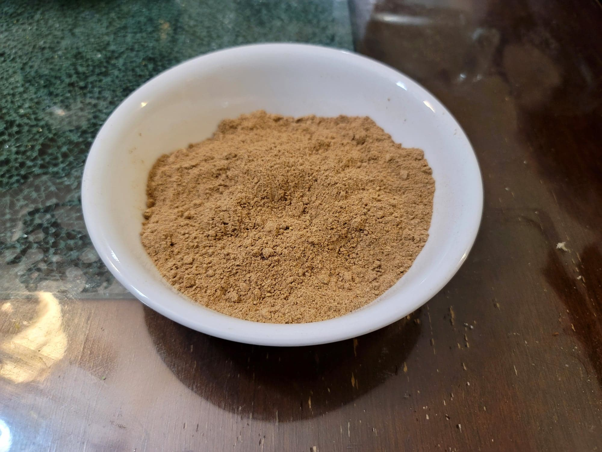

Chaat Masala

Ingredients:
- 3 tbsp Cumin seeds
- 1 tbsp Coriander seeds
- 1/2 tbsp Fennel seeds
- 4 tbsp Amchur powder
- 3 tbsp Black salt
- 1/2 tbsp Ground black pepper
- 1/2 tbsp Ground ginger
- 1/2 tbsp Ajwain seeds
- 1 tsp Dried mint
- 1/4 tsp Asafoetida powder
Instructions:
- Heat a dry pan over medium heat. Once hot, add in the cumin, coriander, and fennel. Dry roast, stirring often, for about 3-5 minutes, or until darkened and fragrant. Then remove from heat and let cool completely.
- Transfer all of the ingredients into a spice grinder and grind until very smooth. Transfer to a container and store.